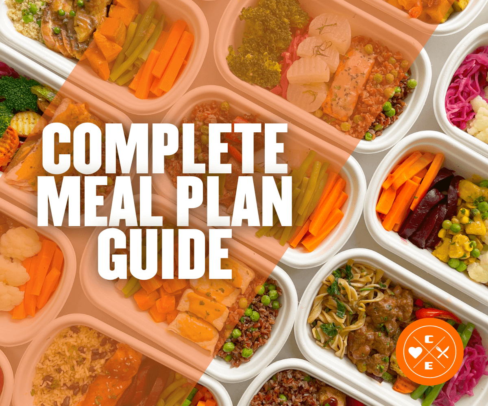
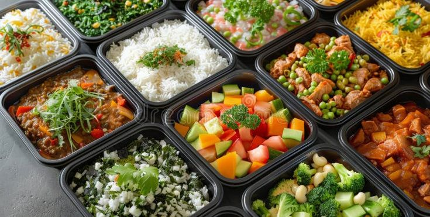
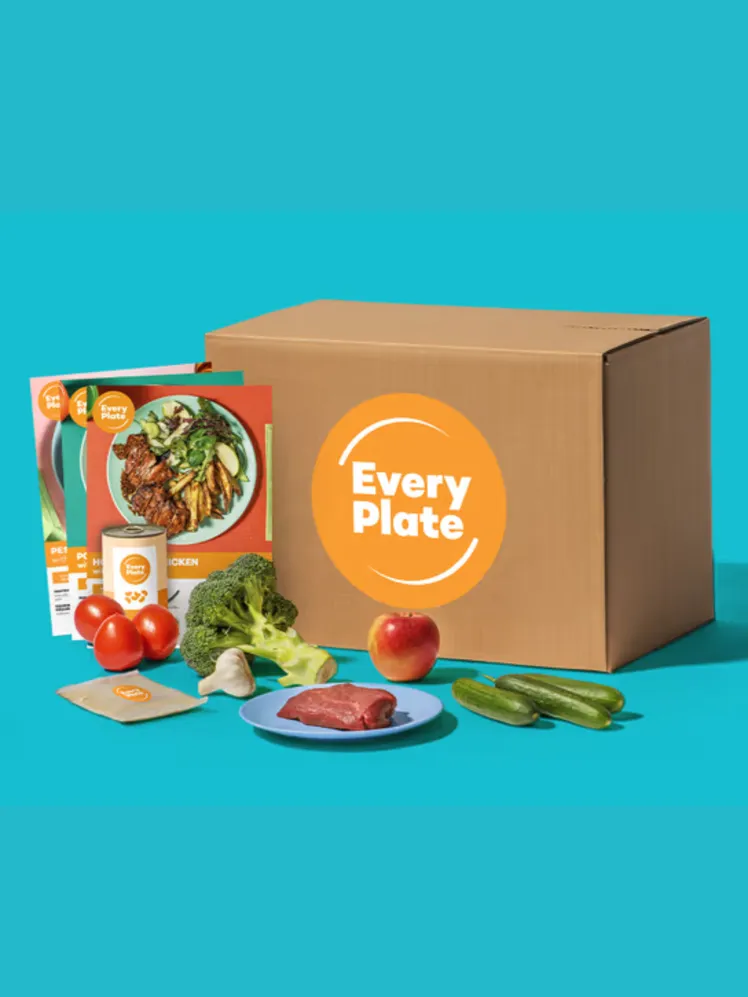
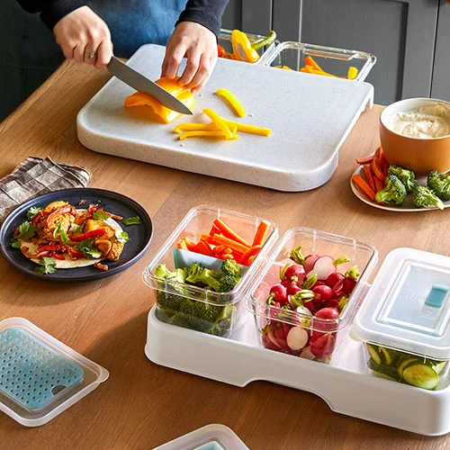
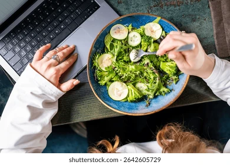

Santiago, RD · Menús semanales · Delivery directo
Comida que entra por los ojos
Platos con color real, luz viva y presentación que provoca pedir.
Practicidad sin sacrificar calidad
Tu semana resuelta con menús listos y pedidos simples.
Marca cercana y confiable
Atención directa, delivery local y una experiencia bien resuelta.
Fit Appétit RD
Comida saludable que sabe mejor.
Menús semanales, planes personalizados y delivery en Santiago para comer bien sin complicarte.
Hecho para tu rutina
Sabor que abre el apetito
Atención rápida por WhatsApp

Menús que provocan
Color, textura y luz natural para vender desde la primera vista.
Delivery en Santiago
Pides por WhatsApp y recibes una experiencia rápida y cuidada.
Antojo inmediato
Haz clic y convierte ese hambre en pedido.
Salud, sabor y orden para tu semana.
Propuesta de valor
Comer mejor debería sentirse simple.
Menús claros, atención directa y una experiencia pensada para sostener tu rutina.

01
Comida con propósito
Platos pensados para nutrirte bien y sostener tu energía.

02
Personalización real
Ajustes según tu plan, tu meta o la guía de tu profesional.

03
Practicidad premium
Menús listos y pedidos simples para resolver tu semana.

04
Delivery de confianza
Atención cercana y entregas organizadas para pedir con confianza.
Cómo funciona
Así de fácil funciona.
Elige tu plan
Selecciona tu menú o solicita una opción adaptada a ti.
Confirma por WhatsApp
Te atendemos rápido y dejamos tu pedido claro.

Preparamos tu pedido
Cocina cuidada, porciones claras y presentación impecable.

Recibe y disfruta
Delivery organizado para que comer mejor se vuelva parte de tu semana.
Servicios
Opciones claras para distintas rutinas.
La forma más simple de resolver tus almuerzos y cenas con nivel.
Constancia, sabor y practicidad sin tener que improvisar cada comida.
Una estructura que se adapta a ti.
Ajustamos selección y porciones a tu objetivo de salud, rendimiento o composición.
Compatible con nutricionista o entrenador.
Una opción práctica para quienes necesitan seguimiento con ejecución real.
Bienestar corporativo bien resuelto.
Ideal para equipos, oficinas o pedidos recurrentes con imagen profesional.
Prueba social
Clientes que vuelven porque les funciona.
Antes resolvía la comida a última hora. Ahora ya sé que tengo algo rico y bien hecho esperándome.
Mariela SantiagoMe gusta porque no se siente como comida de dieta. Se ve cuidada, sabe bien y me resuelve días fuertes.
Laura Profesional independienteYo envío mis indicaciones y ellas lo aterrizan sin drama. Eso me ayuda a mantenerme constante.
Andrés Plan personalizado · Santiago
Cobertura y delivery
Entregamos donde estás.
Santiago activo. Santo Domingo en expansión.
Pedidos activos con entregas organizadas en Santiago.
Estamos preparando rutas y cobertura en Santo Domingo.
Sobre la marca
Fit Appétit RD nace para hacer que comer mejor se sienta posible.
Liderada por Louisiana Dguez Molina, la marca combina cercanía, intención y una forma más práctica de cuidar a las personas.
El resultado es una propuesta humana, clara y sostenible. Salud con sabor, estructura y consistencia.

“Cuando una marca saludable se presenta con orden, sensibilidad y criterio, el cliente no solo compra comida: compra confianza.”
Preguntas frecuentes
Respuestas claras para ayudarte a decidir más rápido.
¿Cómo hago mi pedido?
Puedes escribir directamente por WhatsApp, elegir tu opción y confirmar los detalles de entrega en pocos minutos.
¿Pueden personalizar mi menú?
Sí. La estructura está pensada para adaptarse a preferencias, objetivos e indicaciones profesionales cuando aplique.
¿Trabajan con planes enviados por nutricionistas o entrenadores?
Sí, ese es uno de los diferenciales del servicio. El menú puede alinearse a lineamientos específicos para facilitarte la ejecución.
¿En qué zonas entregan?
Santiago es la base principal. La página también deja lista la comunicación para activaciones o rutas en Santo Domingo.
¿Con cuánto tiempo debo ordenar?
Lo ideal es confirmar tu pedido con tiempo para asegurar disponibilidad y una coordinación cómoda de entrega.
¿Cómo se conservan los alimentos?
Cada pedido se entrega pensado para mantener frescura, orden y practicidad. Aquí puedes luego añadir instrucciones específicas de conservación.
Haz tu pedido hoy
Empieza esta semana comiendo mejor.
Pide por WhatsApp y te ayudamos a elegir la opción ideal para tu rutina.